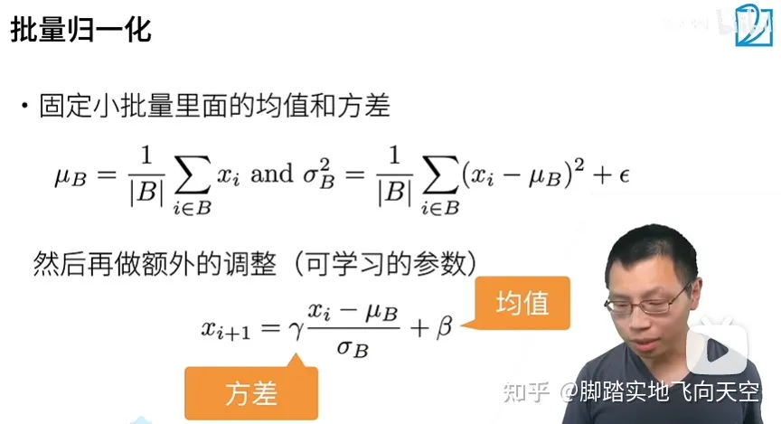
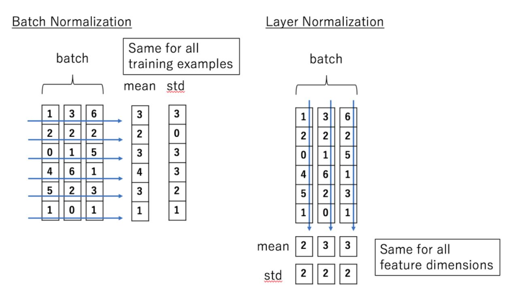

Machine Learning Engineer (Ads) Interview Questions
A Guide to Pass the MLE interview.
1 Norm
1.1 神经网络存在的问题
上层参数需要不断适应新的输入数据分布，降低学习速度。
下层输入的变化可能趋向于变大或者变小，导致上层落入饱和区，使得学习过早停止。
每层的更新都会影响到其它层，因此每层的参数更新策略需要尽可能的谨慎。
1.2 标准化是怎么解决这些问题的
Norm 的使用，可以很好的改善这些问题，它包括两个操作：标准化 + 平移和缩放（注：本文中所有的 Norm 也都代指这两个操作）。
标准化这个操作，可以消除不同数据之间由于量纲/数量级带来的差异，而且它是一种线性变换，并不会改变原始数据的数值排序关系。
经过标准化，每层神经网络的输出变成了均值为 0，方差为 1 的标准分布，不再受到下层神经网络的影响（注意是数据分布不受影响，但具体的值肯定还是依赖下层神经网络的输出），可以有效改善上述的几个问题。
那平移和缩放的作用在哪里呢？主要还是为了：保证模型的表达能力不因为标准化而下降。
在 Norm 中引入的两个新参数 γ 和 β，可以表示旧参数作为输入的同一族函数，但是新参数有不同的学习动态。在旧参数中，x 的均值和方差取决于下层神经网络的复杂关联；但在新参数中，x 的均值和方差仅由 γ 和 β 来确定，去除了与下层计算的密切耦合。新参数很容易通过梯度下降来学习，简化了神经网络的训练。
如果直接只做标准化不做其他处理，神经网络是学不到任何东西的，因为标准化之后都是标准分布了，但是加入这两个参数后就不一样了。
先考虑特殊情况，如果 γ 和 β 分别等于此 batch 的标准差和均值，那么 y 不就还原到标准化前的 x 了吗，也即是缩放平移到了标准化前的分布，相当于 Norm 没有起作用。这样就保证了每一次数据经过 Norm 后还能保留学习来的特征，同时又能完成标准化这个操作，从而使当前神经元的分布摆脱了对下层神经元的依赖。
2 Batchnorm

2.1 定义
对于 BN，在训练时，是对每一个 batch 的训练数据进行归一化，也即用每一批数据的均值和方差。
而在测试时，比如进行一个样本的预测，就并没有 batch 的概念，因此，这个时候用的均值和方差是在训练过程中通过滑动平均得到的均值和方差，这个会和模型权重一起，在训练完成后一并保存下来。
2.2 代码
训练过程中的每一个 batch 都会进行移动平均的计算:
moving_mean = moving_mean * momentum + batch_mean * (1 - momentum)
moving_var = moving_var * momentum + batch_var * (1 - momentum)式中的 momentum 为动量参数，在 TF/Keras 中，该值为 0.99，在 Pytorch 中，这个值为 0.9 初始值，moving_mean=0，moving_var=1，相当于标准正态分布。
在实际的代码中，滑动平均的计算会以下面这种更高效的方式，但实际上是等价的：
moving_mean -= (moving_mean - batch_mean) * (1 - momentum)
moving_var -= (moving_var - batch_var) * (1 - momentum)2.3 训练过程以及对参数的理解
整个训练阶段滑动平均的过程，（moving_mean, moving_var）参数实际上是从正态分布，向训练集真实分布靠拢的一个过程。
理论上，训练步数越长是会越靠近真实分布的，实际上，因为每个 batch 并不能代表整个训练集的分布，所以最后的值是在真实分布附近波动。
一个更小的 momentum 值，意味着更大的更新步长，对应着滑动平均值更快的变化，能更快地向真实值靠拢，但也意味着更大的波动性，更大的 momentum 值则相反。
训练阶段使用的是（batch_mean, batch_var），所以滑动平均并不会影响训练阶段的结果，而是影响预测阶段的效果 。
如果训练步数很短，一个大的 momentum 值可能会导致（moving_mean, moving_var）还没有靠拢到真实分布就停止了，这样对预测阶段的影响是很大的，也会是欠拟合的一个状态。如果训练步数足够，一个大的 momentum 值对应小的更新步长，最后的滑动平均的值是会更接近真实值的。
但是一批数据和全量数据的均值和方差相差太多，又无法较好地代表训练集的分布，因此，BN 一般要求将训练集完全打乱，并用一个较大的 batch 值，配合小的momentum值，去缩小与全量数据的差别。 如果 batch size 比较小，那单个 batch 的（batch_mean, batch_var）和真实分布会比较大，此时滑动平均单次更新的步长就不应过大，适用一个大的 momentum 值。
2.4 LayerNorm和BatchNorm的对比

相同点：
经过归一化再输入激活函数，得到的值大部分会落入非线性函数的线性区，导数远离导数饱和区，避免了梯度消失，这样来加速训练收敛过程。
BatchNorm这类归一化技术，目的就是让每一层的分布稳定下来，让后面的层可以在前面层的基础上安心学习知识。
不同点：
Batch Normalization 是对这批样本的同一维度特征做归一化， Layer Normalization 是对这单个样本的所有维度特征做归一化。两者做 Norm 的维度不一样，BN 是在 Batch 维，而 LN 一般是在最后一维。
BN 需要在训练过程中，滑动平均累积每个神经元的均值和方差，并保存在模型文件中用于推理过程，而 LN 不需要。BN 的参数包括：
每个神经元在训练过程中得到的均值和方差，通过移动平均得到
每个神经元上的缩放参数 γ 和平移参数 β
LN 只包括上面的第 2 部分参数，因为它和 batch 无关，无需记录第 1 部分参数。
- 因为 Norm 维度的差异，使得它们适用的领域也有差异，BN 更多用于 CV 领域，LN 更多用于 NLP 领域。 原因：
- BN作用在特征维度之后，特征维度内有可比性，但是特征维度之间没有可比性。这也对应图片的性质，RGB三个通道之间失去可比性是可以接受的；但是对于不同的图片，同一个通道间是需要可比性的！
- LN作用在样本维度，同一个句子中，不同词向量之间是需要相对可比的（上下文），但是不同句子之间的相同的词向量不一定可比，比如“今天去面试了” 和 “我想吃面”，两个“面”意思完全不同。所以LN也是满足NLP本来的特性的。
2.5 为什么Transformer/BERT使用LN，而不使用BN？
CV和NLP数据的特性
图像数据是自然界客观存在的，像素的组织形式已经包含了“信息”，而 NLP 数据不一样，网络对 NLP 数据学习的真正开端是从’embedding’开始的，而这个’embedding’并不是客观存在，它也是通过网络学习出来的。
LN的作用
layer normalization 有助于得到一个球体空间中符合 0 均值 1 方差高斯分布的 embedding，batch normalization不具备这个功能；
layer normalization 可以对 transformer 学习过程中由于多词条 embedding 累加可能带来的“尺度”问题施加约束，相当于对表达每个词一词多义的空间施加了约束，有效降低模型方差。batch normalization 也不具备这个功能。
Embedding的问题
emmbedding 并不存在一个客观的分布，那我们需要考虑的是：我们希望得到一个符合什么样分布的 embedding?
很好理解，通过 layer normalization 得到的 embedding 是以坐标原点为中心，1 为标准差，越往外越稀疏的球体空间中。
为什么不用BN
在 CV 中常常使用 BN，它是在 NHW 维度进行了归一化（图像的shape是[N, C, H, W]，对应Batch_size, Channel, Height, Width），而 Channel 维度的信息原封不动，因为可以认为在 CV 应用场景中，数据在不同 channel 中的信息很重要，如果对其进行归一化将会损失不同 channel 的差异信息。
而 NLP 中不同 batch 样本的信息关联性不大，而且由于不同的句子长度不同，强行归一化会损失不同样本间的差异信息，所以就没在 batch 维度进行归一化，而是选择 LN，只考虑的句子内部维度的归一化。可以认为 NLP 应用场景中一个样本内部维度间是有关联的，所以在信息归一化时，对样本内部差异信息进行一些损失，反而能降低方差。
3 总结
选择什么样的归一化方式，取决于你关注数据的哪部分信息。如果某个维度信息的差异性很重要，需要被拟合，那就别在那个维度进行归一化。